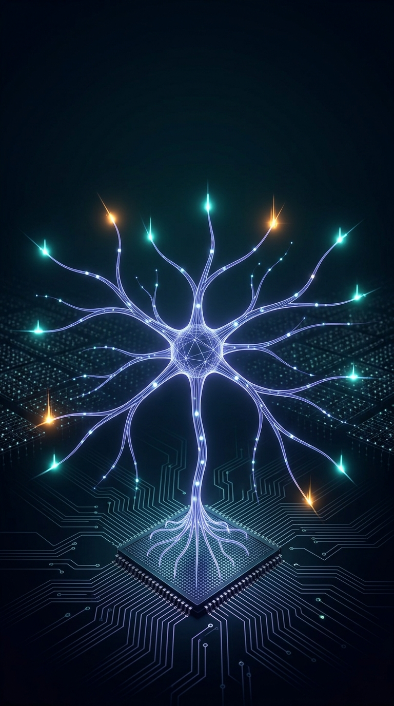

A graduate-level guide to spiking neural networks, neuromorphic hardware, event-based sensing, and edge deployment.
Intelligence does not have to be dense, synchronous, or power-hungry. This book builds neuromorphic AI from first principles — from the mathematics of spiking neurons through full-scale hardware deployment. It covers the theory, algorithms, hardware architectures, event-based sensors, and software engineering discipline that define the field, tracing every concept from plain-language intuition through formal models and version-pinned runnable code. The result is a complete map of a field that is reshaping how AI operates at the edge.
From the first spike to a deployed edge system — every part stands on the one before it.
What neuromorphic AI is, why energy and sparsity matter, the ANN-to-SNN continuum, and biological motivation. Hype calibration from the first chapter.
Ch. 1–5 IIDynamical systems, fixed points, stability, F-I curves, and population models — the mathematical bedrock for everything that fires.
Ch. 6 IIILIF, Hodgkin-Huxley, Izhikevich, AdEx, synaptic dynamics, stochastic spiking, and spike-train statistics.
Ch. 7–11 IVRate, temporal, phase, and population coding; encoding real-world data into spike trains; sparse and predictive coding.
Ch. 12–15 VFeedforward, recurrent, convolutional, reservoir, generative, graph SNNs, and hyperdimensional computing.
Ch. 16–21, 64 VISTDP, supervised spike-timing, surrogate gradients, normalization, ANN-SNN conversion, deep training, e-prop, RL, continual learning, compression, and deployment.
Ch. 22–31, 65–67 VIIWhy specialized hardware, digital chips (Loihi 2, SpiNNaker2, Hala Point), analog systems, memristive devices, AER, FPGAs/ASICs, and hardware–software co-design.
Ch. 32–38 VIIIEvent cameras, event-vision algorithms, stereo and 3D perception, neuromorphic audio, and tactile & multimodal sensing.
Ch. 39–43 IXEdge AI, robotics and autonomous systems, biomedical monitoring, industrial IoT, and combinatorial optimization on neuromorphic hardware.
Ch. 44–48, 68 XANN-SNN hybrids, Neural ODEs and liquid time-constant networks, spiking Transformers and SSMs (86.2% ImageNet SOTA), and spiking foundation models.
Ch. 49–52 XIMetrics, datasets, NeuroBench 2.x, fair energy measurement, the SNN accuracy gap, and explainability of spiking models.
Ch. 53–56, 69 XIIOn-chip learning, scaling to billions of neurons, computational neuroscience, security, theory, neuromorphic photonics, and future directions.
Ch. 57–63 XIIIFramework selection, NIR cross-backend interoperability, performance engineering, reproducible research workflows, AI-assisted development, a recipe cookbook, and an end-to-end capstone.
Ch. 70–76 · Practitioner spineSix habits, kept in every chapter from the first spike to the last deployed model.
Every chapter contains at least one version-pinned, runnable code recipe. Not a snippet — a complete, executable pipeline with expected output.
Boxes throughout the book teach readers to trace claims to primary sources. "1000× energy reduction" is not accepted without verified benchmarks and a real hardware comparison.
After each from-scratch build, a Library Spotlight shows the same task in snnTorch, Norse, Tonic, Sinabs, or NIR, and names exactly what the library handles for you.
The Researcher path builds formal depth from Part I through Part XII. The Practitioner path starts with Part XIII, pulling theory only when needed for a deployment decision.
Each chapter closes with a curated set of open research problems, citing the specific gap in the literature — a starting point for thesis topics and research proposals.
23 hands-on labs from single-neuron simulation to NIR cross-hardware round-trips. Five final-project tracks for both researchers and practitioners.
Building Neuromorphic AI is one of six connected books, each a deep build-it-yourself guide to a major field of AI.
From Spiking Neurons to Edge Intelligence.
You are here